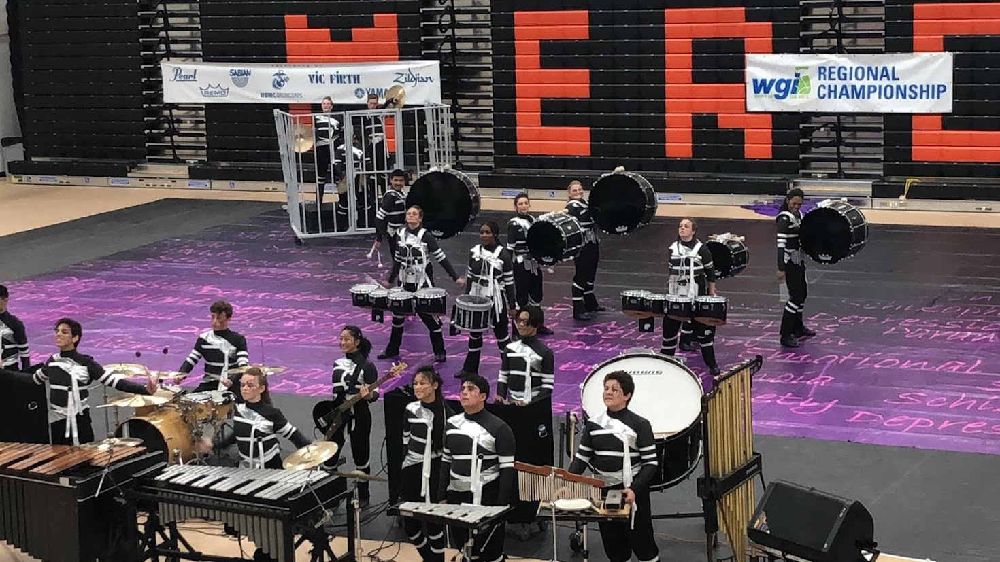

Biography
Looking to gain new skills to enhance my college experience and further my resume. I am a pre-buisness major at BYU. I enjoy buiilding computers and playing marimba. I am industry certified in Adobe Premier and I also have skills in Adobe Illustrator and Photoshop. I enjoy working with computers and would like to learn more about them and assist users with their issues.
Hobbies and Interests
I enjoy working and playing with computers. I like building things and putting it together like a puzzle.I also enjoy playing Marimba and Drums. I have been playing ever since I was 11 and have enjoyed playing in an ensemble. I've played in 6 years of winter percussion and was in various Jazz Ensembles from 7th to 12th grade. Below is a video performanace of my Winter Percussion Team from High School in 2019.

I also enjoy theater and muisic. I got the opportunity to go with my high school to see Hamilton and perform on stage. My friends and wrote and choreographed a piece to show in front of the audience of Hamilton. On top of that we got in the San Fransisco Newspaper for it!
Work Experience
- Computer Technician - Life Sciences CSR August 2021-Present
- Building and troubleshooting computer components
- Fluent in Windows 10 settings and troubleshooting
- Spent time editing databases
- Built problem solving skills
- Shift Manager - Five Guys Burgers and Fries February 2021-August 2021
- Responsible for cleanliness of the store and deligating tasks
- Greet and provide quality service to customers
- List inventory and make orders
- Crew Member - Five Guys Burgers and Fries July 2020-February 2021
- Meet a high quality standard for products
- Cook and serve food
- Followed instructions and kept a high quality standard of cleanliness
Education
Brigham Young University, Provo, UT
- Current undergrad student. 3.99 GPA
El Capitan High School, Merced, CA
- Valedictorian with a GPA of 4.00, I was involved in Computer Graphics and Digital Media classes where I would problem solve to fix broken equipment and learned how to use Adobe software.
Communication
I work very well with others and know how to talk to customers who are dissatisfied and know how to talk to talk to employees to take proper steps to fix any issue happening in the workplace, quality wise or personality wise.
Leadership
I worked as a Shift manager and Shift lead in my old job and know how to take charge of a group of people when necessary. In High School I served in the Band Council of my High School Band and my senior year I was the Vice President and Percussion Section leader. I have gone to leadership camps and know how to set goals for a team and attain them.
References
- Angelique Rodriguez - Five Guys General Manager
- Riki Garcia - Five Guys Area Manager
- Darin Stephens - Service Desk Full Timer
- Danny Yeo - Life Sciences IT director
Contact Information
Phone Number: (209) 658-6977
Email: mantoangabe@gmail.com
Back to top.